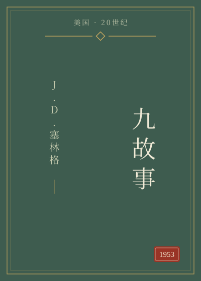
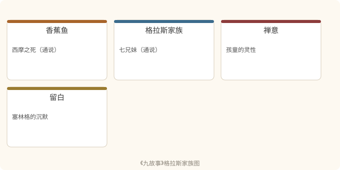

九故事
一、基本信息
| 作者 | 塞林格 |
|---|---|
| 成书/出版 | 1953年（作者页 B148 口径：九故事（1953）） J.D. Salinger — Encyclopaedia Britannica（百科全书） |
| 国别/地区 | 美国 |
| 时代 | 现当代 · 20世纪 |
| 体裁 | 短篇小说集 |
| 语言 | 英语 |

《九故事》格拉斯家族图（主题·结构图）
二、创作背景
作者页（B148）：塞林格 major_works 载'九故事（1953）、弗兰妮与祖伊（1961）'（B148 作者页定位，详见 maitian 条核对）。
篇目（通说待核）：《香蕉鱼的好日子》《逮香蕉鱼的最佳日子》——西摩之死开篇；末篇《泰迪》。
三、内容脉络
九个故事（通说）：以《香蕉鱼的好日子》开篇——西摩的自杀（通说待核）。
四、主要人物表
| 人物 | 身份 | 说明 |
|---|---|---|
| 西摩·格拉斯 | 退伍军人 | 开篇自杀（通说待核） |
五、主题与艺术特点
- 禅与'格拉斯家族'（通说待核）。
- 战后创伤（通说）。
- 孩童的灵性（通说）。
六、影响与评论
- 作者页：塞林格短篇代表作（B148 作者页口径）。
J.D. Salinger — Encyclopaedia Britannica（百科全书） - 《麦田里的守望者》之外的另一半塞林格（通说）。
J.D. Salinger — Encyclopaedia Britannica（百科全书）
七、阅读建议
难点
- 禅意典故（《香蕉鱼》）。
- 留白结构。
- 《九故事》（人民文学出版社/译林出版社版本，通说待核）。
- 英文原版。
对照《麦田里的守望者》读。
八、待核实
- 九篇篇目核对。
- 1953年（Little, Brown说）核对。
- 西摩之死的解读待核。
本页主要来源
相关作品：麦田里的守望者当我们谈论爱情时我们在谈论什么莫泊桑短篇小说选
塞林格的其他收录作品：麦田里的守望者